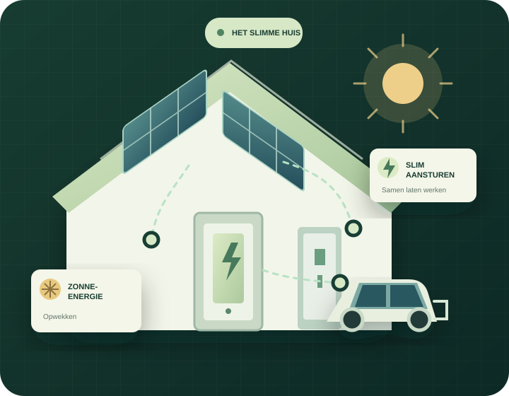

Begrijp je energie.
Kies wat bij je past.
Van zonnepanelen en thuisbatterijen tot slimme apparaten en energiecontracten. Je vindt hier begrijpelijke uitleg, praktische hulpmiddelen en betrouwbare verdieping. Begin gewoon bij je vraag — technische kennis is niet nodig.

Je hoeft nog niets te weten.
We helpen je op weg.
Misschien ben je je aan het oriënteren. Misschien heb je al zonnepanelen of een batterij. Of je wilt juist de techniek tot in detail begrijpen. Kies de route die bij je past.
Leg het me simpel uit
Wat is een thuisbatterij? Hoe werken zonnepanelen? Wat verandert er in 2027?
Begin bij de basis ↗ 02 · MIJN WONINGWat past bij mijn situatie?
Beantwoord een paar vragen over je woning, verbruik en plannen. Je krijgt een eerste richting.
Start persoonlijk vooradvies ↗ 03 · VERDIEPINGLaat me de cijfers zien
Lees onderzoeken, technische details, marktontwikkelingen en de aannames achter claims.
Duik in onderzoek en techniek ↗Een slim huis heeft
meerdere onderdelen.
Apparaten werken niet vanzelf goed samen. Begrijp eerst de rol van elk onderdeel en ontdek daarna hoe je ze op elkaar afstemt.
Niet meteen iets kopen.
Eerst weten wat je nodig hebt.
Een thuisbatterij, laadpaal of energiemanagementsysteem kan nuttig zijn — maar niet voor iedere woning en niet in iedere combinatie. We helpen je de juiste vragen te stellen voordat je investeert.
- Begin bij je eigen energiegebruik.
- Bekijk welke apparaten al aanwezig zijn.
- Controleer of systemen echt samenwerken.
- Vergelijk kosten, voorwaarden en aannames.
Waar lopen mensen
in de praktijk tegenaan?
Geen technisch verhaal om het technisch verhaal. We beginnen bij vragen die je als woningeigenaar of consument echt tegenkomt.
Kun je echt geld verdienen met stroomhandel?
Ontdek het verschil tussen omzet, besparing, bruto-opbrengst en nettoresultaat.
Lees de uitleg ↗ SLIMME STURINGWie moet mijn batterij eigenlijk koppelen?
De batterij kan geïnstalleerd zijn, terwijl de koppeling met een energiedienst nog niet actief is.
Lees hoe het werkt ↗ SALDEREN 2027Wat verandert er als salderen stopt?
En wat betekent dat voor zonnepanelen, teruglevering en je energierekening?
Bekijk de gevolgen ↗Zelf aan de slag.
Op jouw tempo.
Gebruik onze hulpmiddelen om je situatie te verkennen en een gesprek met een installateur of leverancier goed voor te bereiden.
Bekijk alle tools ↗Leer in je eigen tempo.
En test wat je onthoudt.
Bekijk uitlegvideo's, luister naar podcasts en ontdek korte kennistests. Van de eerste kennismaking tot de technische details.
Van een mooie claim
naar wat de cijfers zeggen.
We leggen onderzoeken, praktijkproeven en commerciële beweringen naast elkaar. Daarbij laten we ook zien waar gegevens ontbreken en wat je niet uit een onderzoek kunt concluderen.
Geen verkooppraat.
Wel grip op je keuzes.
DuurzaamKompas is er om consumenten te helpen begrijpen wat slim is voor hun eigen woning. Soms is een nieuw apparaat een logische stap. Soms is beter instellen, meten of voorlopig niets kopen verstandiger.
Lees hoe we werken ↗Ken je iemand die
door de bomen het bos niet ziet?
Deel DuurzaamKompas. Het is gratis te gebruiken en bedoeld voor iedereen die slimmer met energie thuis wil omgaan.
Niet alleen de batterij.
Ook de aansturing erachter.
Ontdek welke energieleveranciers batterijen kunnen aansturen en welke systemen sterk zijn in integraties, techniek en praktijkgebruik.
Bekijk leveranciers en sturing ↗Zie wat er gebeurt.
Niet alleen wat er wordt beloofd.
Bekijk KNMI-weermetingen en zonnestraling, plus een PVGIS-model voor zonneproductie. NED- en TenneT-data worden toegevoegd zodra openbare doorgifte is toegestaan.
Open het live energiedashboard ↗Krijg grip op je energie
met inzicht uit je eigen woning.
Koppel je slimme meter, volg je stroom- en gasverbruik, bekijk je persoonlijke besparingsgeschiedenis en ontvang iedere week een praktische tip voor jouw huishouden.
Open Mijn Kompas ↗